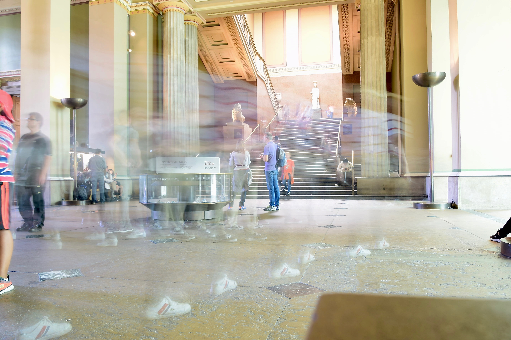
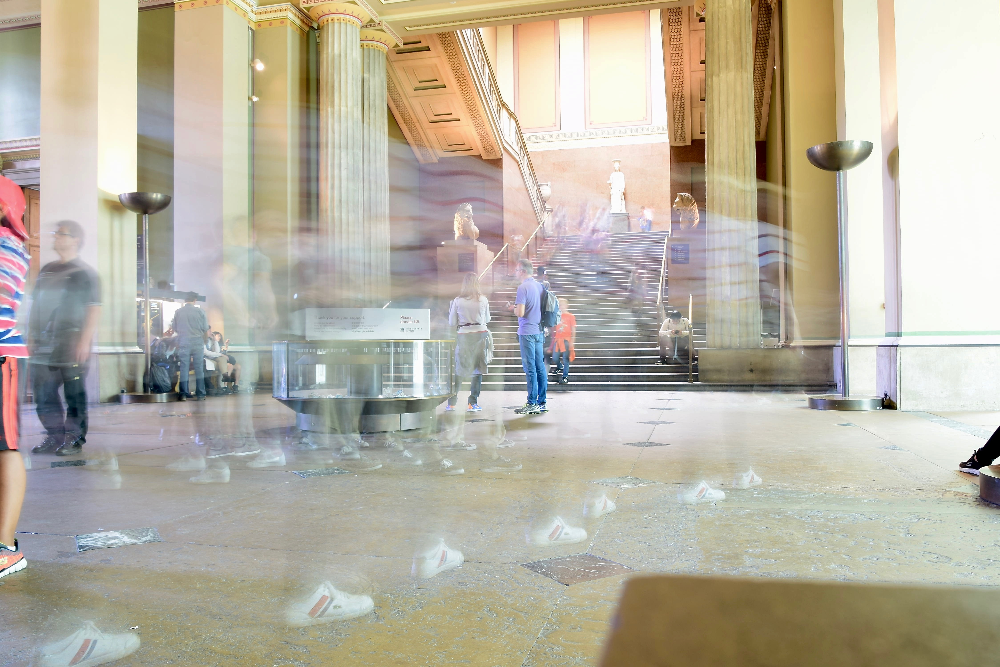

Madame Tussauds
Madame Tussauds Londen is een wassenbeeldenmuseum in de het Engelse Londen.
Het museum is gelegen aan de Marylebone Road, naast een Planetarium.
Dagelijks gaan duizenden bezoekers kijken naar de wassen creaties van
beroemde zangers, acteurs, sporters en andere bekendheden. Het nadeel
van de populariteit van Madame Tussauds zijn de lange wachtrijen die
er staan om binnen te raken.Het museum werd in 1835 geopend aan de Baker Street en is daarmee de oudste locatie van Madame Tussauds.
Het museum werd door Marie Tussaud geopend, zij was een maakster van wassen beelden.
Na haar overlijden in 1850 verhuisde het museum in 1884 naar de huidige locatie.
In 2007 nam de Merlin Entertainments Group het beheer van de Tussauds Group over.


The British Museum
Al in 1753 werd het Britse Museum opgericht om de wereld een kijkje te
geven in de roemrijke geschiedenis. De arts Hans Sloane had zeer
welgestelde patiënten die hem zo nu en dan iets bijzonders schonken.
Hierdoor begon hij te verzamelen. Tegen de tijd dat hij overleed
bestond zijn persoonlijke collectie uit ongeveer 71.000 objecten.Dit
alles is tegenwoordig terug te zien in dit indrukwekkende museum.Door
de diversiteit maak je als het ware een reis door de wereld.
 

Natural History Museum
Eigenlijk alles omtrent ontwikkelingen, de geschiedenis en de toekomst
van onze planeet staat hier centraal. Daarnaast zijn er diverse
wetenschappelijke erfenissen te bestuderen en maak je kennis met
bijzondere flora en fauna waarvan je van sommige het bestaan nooit
hebt kunnen vermoeden. Kortom er is voor zowel jong als oud veel te
ontdekken in dit prachtige en tevens grootste natuurhistorisch museum
van het Verenigd Koninkrijk.